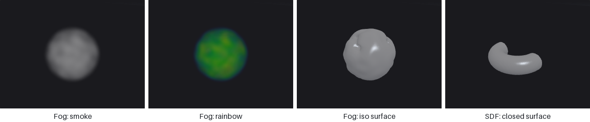

Viewing and export#
Geometry lives inside the ComfyUI server process, so you look at it through dedicated nodes: an interactive 3D viewport (in a node or in a floating panel driven by Houdini-style display flags), a software-rendered preview image, and a spreadsheet. Cameras are nodes too, shared by every render and projection step. To get results out of ComfyUI you write meshes, instance tables, images, image sequences or geometry caches into the ComfyUI output folder. This page gives an overview of those tools and when to use which.
Looking at geometry#
| Node | Shows | Use it when |
|---|---|---|
| Display (PCG) | The flagged node's output in the floating 3D panel | Day-to-day work: click a node's display flag to see it. |
| Viewport (PCG) | An interactive 3D view inside the node | Pinning several views on the canvas, e.g. to compare branches. |
| Geometry Preview (PCG) | A software-rendered ComfyUI IMAGE | You need an image: to save it, or to feed an image node. |
| Geometry Spreadsheet (PCG) | Attribute tables per class | Checking values, groups and topology. |
Viewport and Display pass their input through unchanged, so they can sit in the middle of a chain. Both take an optional template input that is drawn as a grey wireframe for reference, like Houdini's template flag.
Geometry Preview has three looks. Basic is a quick flat-lit render. Studio is meant for pictures you keep: smooth shading, a key light with shadows, sky fill, ambient occlusion, a ground that catches shadows and fades into a gradient background, and supersampled edges. It can also show textures, either files (basecolor = pcg/materials/T_{material}_BaseColor.png, normal = ..., picked per face by a material attribute) or layers straight from a COP chain (basecolor = @basecolor with the COP image connected to textures_cop), using the same tangent frames as Export Mesh, so a baked normal map looks as it will in an engine. Outdoor is an environment shot instead of an object on a studio floor: a perspective camera (a connected Camera, or an automatic 35 mm camera at Elevation / Azimuth), a sky with a sun, sun light with shadows plus sky fill and ground bounce, aerial perspective that fades distant surfaces toward the horizon (Haze), and an optional ground plane to the horizon. It is what makes a street or a valley read at its real scale; the modular city and world tiles examples use it, the asset examples use Studio.
Display flags and the floating panel#
Every node with a geometry output has two small squares above its title bar, on the left: blue is the display flag, grey the template flag.
| Action | Effect |
|---|---|
| Click the blue square | Display this node's output in the panel. |
| Click the grey square (or right-click / Ctrl+click the blue one) | Use this node as the template (grey wireframe). |
| Click the same flag again | Clear it. |
ComfyUI only executes nodes that lead to an output node, so a flag cannot simply "look at" an intermediate node. Instead, the flag rewires the input of a Display (PCG) node to the flagged node; that wire is the real dependency, and it survives save, undo and copy/paste. A graph needs only one Display node; if there is none, clicking a flag creates one next to the flagged node. If auto re-run is on (the ↻ button in the panel title bar, on by default), clicking a flag also queues the graph; clicks made while a run is in progress are merged into one follow-up run.
The panel floats over the canvas; drag and resize it, and its position, size and shading options are remembered. Title bar buttons: ↻ auto re-run, ⛶ frame everything, ✕ hide. The 3D button in the bottom-right corner of the window shows or hides the panel. The title bar names the node being shown.
Viewport controls#
The same viewer is used by Viewport (PCG) and the floating panel.
| Input | Action |
|---|---|
| Left drag | Tumble. |
| Middle drag | Track (pan). |
| Right drag, mouse wheel | Dolly. |
Double-click, F / G / H / Home | Frame all. |
1 / 2 / 3 / 4 | Perspective / top / front / right view (also leave the UV view). |
5 | UV view on / off (see UV view). |
| Alt or Space + left drag | Tumble, even when a handle or the curve tool is active. |
Keys act while the pointer is over the view, also when a toolbar menu of the panel still has focus; only a text box being typed in keeps its keys. Display options are front-end only and do not re-run the graph: shading (phong, lambert, normal, color — flat colour without highlights, uv — a UV checker, wire), normals (auto, smooth, vertex, flat), wireframe overlay, points, normals display (point / vertex / prim) and their length, element numbers (point / vertex / prim), grid, group highlight, and attribute visualisation. Like Houdini, the shaded view shows Cd in every mode except normal: a vertex Cd wins over a point Cd, which wins over a primitive Cd, which wins over a detail Cd (that one tints the whole object); attribute visualisation takes precedence over Cd. Curves and point clouds take a point Cd. The point markers of the Points toggle are an overlay on a mesh or a curve and keep their own cyan whatever Cd is; in a point cloud the points are the geometry and show Cd. Polylines and point clouds are drawn as lines and points; volumes are drawn as smoke or iso-surfaces (see Volumes below) and NURBS / Bezier primitives are tessellated for display.
The viewer is built on three.js. It is loaded from web/vendor/three.module.js inside the plugin folder if that file exists, otherwise from a CDN (three.js 0.160.0). On a machine without internet access, put three.module.js (version 0.160.0) into web/vendor/.
UV view#
Press 5 over the view for an orthographic look at the uv layout, like Houdini's UV viewport: the 0–1 tile with a 0.1 grid and its neighbouring tiles, the faces filled translucent (overlapping islands read darker) and the polygon edges drawn in uv space, so seams show as separate edges. Faces wound against the majority — a mirrored island or a fold — are red, and the info bar counts them. A vertex uv wins over a point uv; both size 2 and size 3 work. Left or middle drag pans, right drag or the wheel zooms about the pointer, F or a double-click frames the layout together with the 0–1 tile; 5 again or 1–4 return to the 3D view as you left it. Handles are off in the UV view.
To see the uv on the model, pick the uv shading: a checker, 8 × 8 cells per tile, light cells tinted by position (more red along u, more green along v) with a dark notch in their low-u, low-v corner, so stretching, scale differences and mirrored faces are visible at a glance. Without a uv attribute the model stays grey and the info bar says so.
Volumes#
Volumes are drawn the way Houdini draws them, and Volume Visualization (PCG) changes it per geometry:

| Volume | Drawn as |
|---|---|
| Fog / density, or a grid of class none | Smoke, ray-marched in the browser. The value is optical thickness per unit length: density 1 across one unit lets e⁻¹ ≈ 37 % of the light through, independent of the resolution. Lit by the headlight with self-shadowing. |
| SDF (level set) | The iso-surface at 0, closed where the grid boundary cuts it. |
| Vector grid | Its bounding box only (use Volume Trail, Volume Slice or VDB Vector Split to look inside). |
Volume Visualization can pick the volumes to draw (Density Field), switch to Rainbow, Iso Surface (at an Iso Value) or Invisible, scale the density and the self-shadowing, colour the smoke with a diffuse field (a scalar through a ramp, or a vector / three scalars as RGB) and add emission. Grids larger than Max Vis Res (128 by default) are resampled for display only. With the wire shading mode volumes show as their bounding boxes.
Smoke is drawn after the solid geometry: geometry in front of a volume hides it, geometry inside a volume shows through the smoke in front of it but is not blended exactly.
Handles#
Select a node in the graph and its handle appears in the view, like Houdini's state handles (no need to press Enter). Nodes with handles: Transform, Soft Transform, Copy and Transform, Clip, Mirror, and the generators Box, Sphere, Grid, Tube, Torus, Circle, Line and Platonic Solids. Curve (PCG) gets the curve drawing tool instead (below). With several nodes selected, the handle belongs to the current node.
| Input | Action |
|---|---|
T / R / E | Translate / rotate / scale handle (only the kinds the node has). The buttons at the bottom left do the same. |
| Drag an arrow | Move along that world axis. |
| Drag a small square | Move in that plane. |
| Drag the centre circle | Move in the screen plane. |
| Drag a ring | Rotate. Each ring edits one rotate channel and is drawn around the axis that channel really turns about (gimbal rings), so the result matches what you see for any Rotate Order. |
| Drag a scale box / the centre box | Scale along the object's own (rotated) axis / uniformly (Uniform Scale where the node has it). |
| Ctrl while dragging | Snap: a tenth of the grid unit, 15 degrees, steps of 0.1. |
A handle only changes the node's parameters, exactly as dragging the numbers in the panel would; the geometry is still computed in Python. While you drag, the graph is queued at most every 120 ms and once more on release, when the panel's Auto is on. Undo, saving and copying nodes work as usual. A parameter that is driven by an expression, a reference or a link is locked (grey, cannot be dragged); a keyframed parameter gets a key at the current frame. Dragging a Clip handle in Direction mode turns on Use Origin, and rotating a Circle turns on its rotate option, because otherwise the values would have no effect.
Selecting#
Press S with the pointer over a viewport (node or panel) to enter select mode; a toolbar appears at the top, Esc leaves it. The selection becomes a group expression that any group field understands.
| Input | Action |
|---|---|
| Click | Pick the nearest point (within 10 pixels), or the primitive under the cursor. |
| Drag | Box select: points by position, primitives by their centre. |
| Shift / Ctrl | Add to / remove from the selection; plain click or drag replaces it. |
points / prims | What is selected (switching clears the selection). |
visible | Skip what the surface hides (on large meshes with many candidates it selects through and says so). |
copy | Put the expression, such as 0-4 7 12-19, on the clipboard. |
→ group | Create a Group Create node wired to the node feeding the viewport, with the expression as its base pattern. |
Numbers refer to the geometry the viewport shows, so the expression belongs on nodes downstream of the node that feeds it. Alt / Space + drag and the middle and right buttons still navigate.
Drawing curves#
Select a Curve (PCG) node to draw in the view. The points are stored in the node's Points field (one x, y, z per line), so they can also be typed or edited by hand.
| Input | Action |
|---|---|
| Click empty space | Add a point at the end. It lands on the displayed geometry if the click hits it, otherwise on the construction plane: the ground plane when looking down or up, or a vertical plane through the previous point, facing the camera, when looking from the side. |
| Drag a point | Move it (in the same kind of plane through the point). Shift: snap to the surface under the cursor. Ctrl: snap to a tenth of the grid unit. |
| Ctrl + click a segment | Insert a point there. |
| Delete / Backspace over a point | Remove it. |
| Click the first point | Close the curve (with three or more points). |
| Click and drag on empty space | Tumble; no point is added. |
The curve is shown as a dashed overlay at once; the cooked curve (Polygon, NURBS or Bezier) follows when the graph has run.
Cameras in the panel#
The floating panel has a camera bar. Choose a Camera (PCG) node from the graph to look through it, then:
| Button | Effect |
|---|---|
⦿ | Move the view to the camera once. |
↥ | Write the current view into the camera once. |
| Lock | While locked, tumbling the view edits the camera's parameters (Houdini's "lock camera to view"). The graph is queued once you stop moving. |
| Resolution gate | Shows the frame that will be rendered; inside the gate you see exactly the rendered field of view. |
Writing the view into a camera sets its mode to look_at.
Spreadsheet paging#
When a class has more rows than Max Rows, the Geometry Spreadsheet footer shows page buttons and a row field. Pages come from the server's cache of the last run, so paging through a million points never re-runs the graph and leaves Start Row alone. The panel warns when the view cannot match the render exactly (frame mode, orthographic cameras, an up vector other than +Y).
Cameras#
Cameras are a separate data type so that the view used to render an image and the view used to project it back are the same wire.
| Node | Purpose |
|---|---|
| Camera (PCG) | One camera: frame (fit to the geometry's bounding sphere), orbit around a target, or look_at. |
| Camera Path (PCG) | A camera sequence along an orbit or a fly-through. |
| Camera Pick (PCG) | One camera from a sequence. |
| Camera from Points (PCG) / Camera To Points (PCG) | Convert between camera sequences and points (with optional path and frustum wireframes). |
Cameras feed Render Pass (PCG), Render Sequence (PCG), Texture Render (PCG), Motion Vectors (PCG), UV Backproject (PCG) and the cams input of For-Each Frame Begin. See Images.
Exporting#
All writers put their files under the ComfyUI output folder; file names are relative to it.
| What | Node | Formats and notes |
|---|---|---|
| Meshes | Export Mesh (PCG) | .glb or .obj (+ .mtl), with UVs, normals, tangents, vertex colours and material slots from the primitive material attribute. Can split into named meshes or into one file per attribute value. glTF is written Y-up in metres; Scale converts units. The returned path of a .glb can be connected to ComfyUI's Preview3D node. Packed primitives are written as GPU instances (EXT_mesh_gpu_instancing): one mesh per piece plus per-instance transforms. |
| Instances | Export Instances (PCG) | CSV or JSON, one row per point: asset name, position, quaternion, Euler angles and scale, read exactly as Copy to Points reads them; packed primitives are read directly (one row each). Axis remapping, unit scale, optional tiling. |
| Images | COP Write File (PCG) | PNG 8/16, EXR half/float, RAW .r16 / .r32, channel packing, tiles, sidecar JSON. Or COP Export into ComfyUI's Save Image. |
| Image sequences / video | Sequence Export (PCG) | Turns a COP sequence (from For-Each Frame End or Render Sequence) into an IMAGE batch for ComfyUI's image and video nodes. |
| Geometry as data | Geo to JSON (PCG) | Attributes as JSON text. |
File-name parameters support placeholders such as {index} (and {tx} / {ty} for tiles, {name} for per-attribute files); string fields also accept templates such as out/$F4, which are expanded in the browser before the run.
Importing#
Import Mesh (PCG) reads OBJ, PLY, STL, GLB / glTF and LAS without external libraries (n-gons are kept, UVs go to vertices, PLY point clouds including Gaussian splats are supported); compressed LAZ needs the optional laspy package. Survey-sized LAS coordinates are recentred, with the offset in the las_origin detail attribute. Choose Weld and Up Axis deliberately; the reference explains why. File Merge (PCG) and From JSON (PCG) are the other entry points.
Geometry cache#
Geometry is not saved in the workflow, so after a restart every chain is recomputed on the next run. File Cache (PCG) stores geometry on disk:
| Mode | Behaviour |
|---|---|
| Automatic (Read if Exists) | Read the file if it exists, otherwise compute and write it. |
| Always Write | Recompute and overwrite. Use it once after changing the upstream. |
| Load from Disk | Always read; error if the file is missing. |
When the node reads, the upstream is not executed at all: its input is lazy. The file path (default pcg_cache/geo_$F4.npz) replaces $F / $F4 with the node's Frame value and $V with Version. Frame is not taken from the timeline automatically; connect it from Frame (PCG) or For-Each Frame Begin for per-frame caches. Change Reload to force a new read or write. Files are .npz with a JSON manifest and no pickle, so they are safe to share.